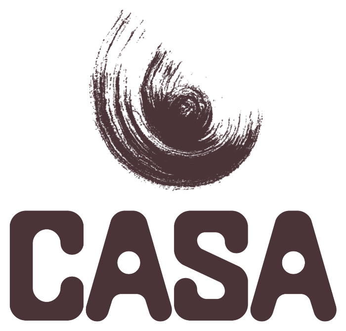

Marie D’Antoni Céramiste
Marie, enchantée. J’ai 26 ans et je suis artiste céramiste
Je modèle des objets aux formes organiques inspirés de la nature et des humains que je rencontre
Certaines pièces racontent une histoire, d’autres servent juste à boire un café
Chacune est façonnée avec amour dans mon endroit préféré : mon atelier, que j’ai appelé CASA <3
La terre est un médium magique que j’aime plus que tout, et je vous invite à venir expérimenter avec moi
Nous les humains sommes des créateurs, so let’s create together !
 Photo à venir
Photo à venir
Mon atelier

CASA c’est mon atelier, mon cocon, mon temple
À mes yeux c’est un lieu sacré, où je puise mon inspiration, où je façonne mes pièces et leur donne vie
La lumière, les tableaux de mes grands-parents, les sculptures de ma mère, les plantes, les vinyles : CASA c’est une ambiance
J’y accueille les personnes qui veulent entrer dans mon univers et créer de leurs mains
Pour partager, échanger, connecter
Vous y êtes les bienvenus <3
 Photo à venir
Photo à venir
 Photo à venir
Photo à venir Photo à venir
Photo à venirPour les structures
Mes prestations
J’interviens dans des structures diverses pour proposer des ateliers poterie (entreprises, établissements médico-éducatifs, centres culturels, hôtels, et même en boîte de nuit). Ma ligne directrice est toujours la même : créer une bulle créative pendant laquelle on déconnecte le cerveau et on connecte à la terre pour créer de ses mains.
En fonction des structures et des publics j’adapte mes objectifs : faire une pause au milieu d’une journée de travail, développer sa mobilité fine, stimuler le sens tactile avec la terre, tester de nouvelles activités créatives. Ou encore faire une pause entre le bar et le dancefloor…
Vous êtes une structure et vous souhaitez organiser un atelier dans vos locaux ? On en discute ensemble pour créer une expérience qui vous ressemble.